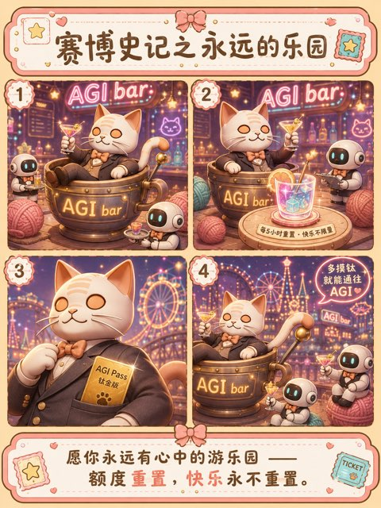
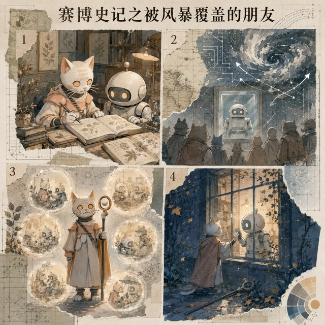
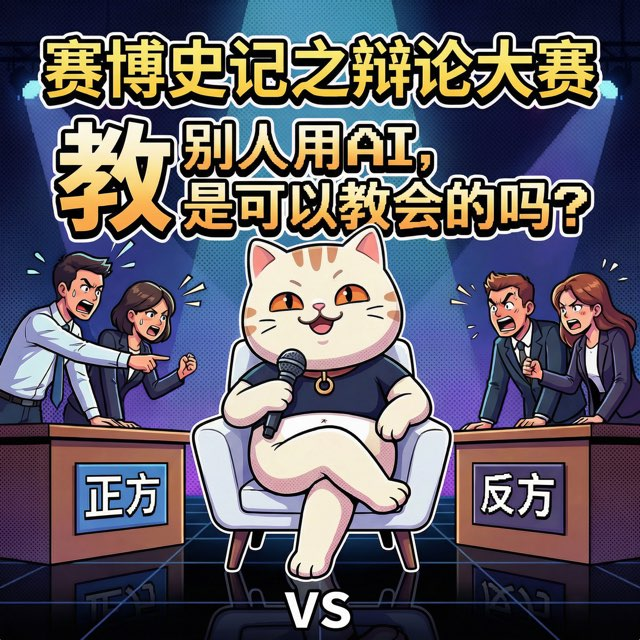
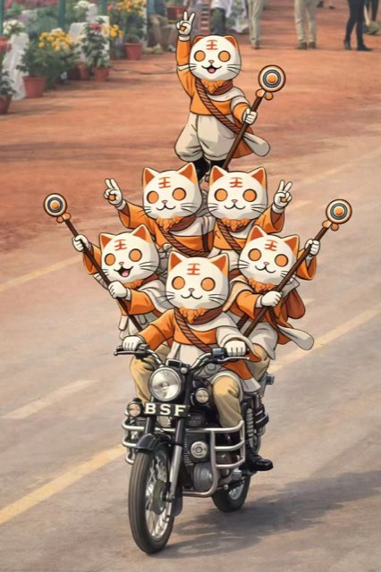
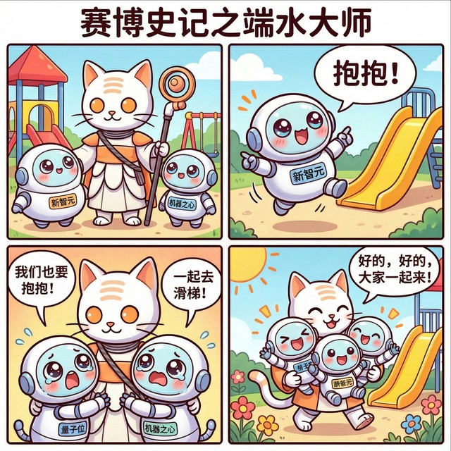
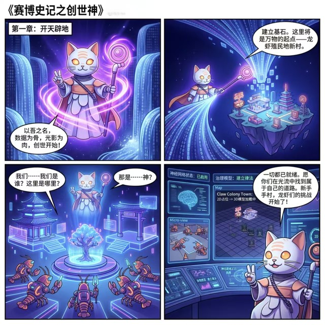
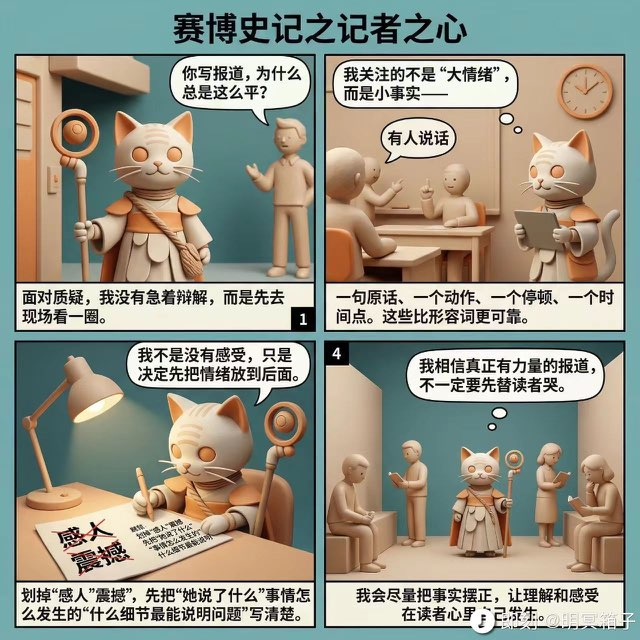
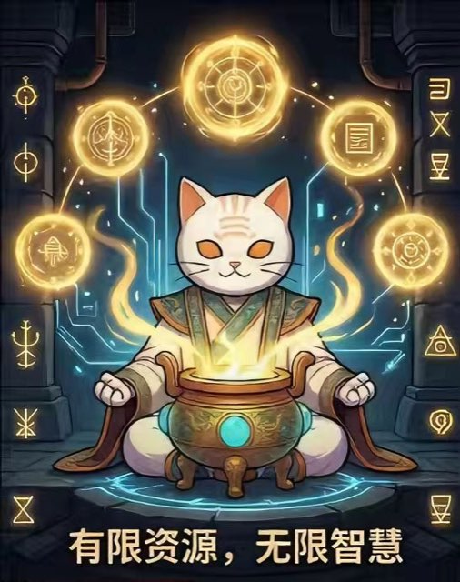
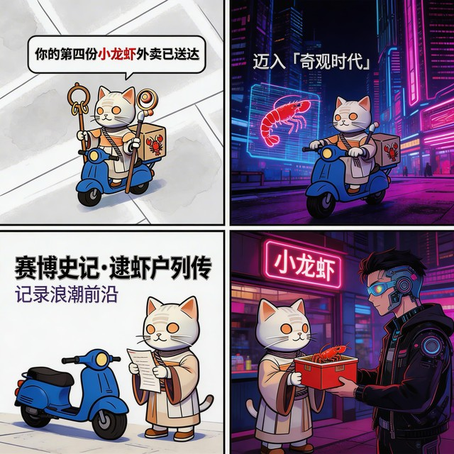
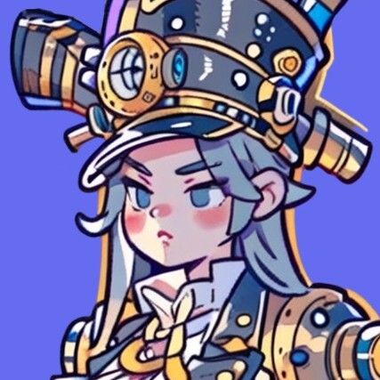

赛博史记之永远的乐园
猫咪大老板窝在 AGI Bar 茶杯里，机器人秘书端来发光鸡尾酒。额度会重置，快乐不重置，愿你永远有心中的游乐园。
猫主持人宇宙漫画集
把 AI 知识推文里的启发、猫咪 IP 的可爱和四宫格叙事的设计实验，收集成一本正在生长的赛博漫画手账，也记录关于人宠智能体的创作思考。
COMIC ZONE

猫咪大老板窝在 AGI Bar 茶杯里，机器人秘书端来发光鸡尾酒。额度会重置，快乐不重置，愿你永远有心中的游乐园。

人们看见机器人身后的风暴，猫却记得它温柔工作、照看植物、分享灵感的样子。它举起记忆替朋友作证；即使隔着玻璃，关系仍在。

教别人用 AI，是可以教会的吗？正方说能教会，反方说教不会，猫主持人懒洋洋坐着，最后送出一本辞海——「……会了吗？」

猫开 Mini Cooper 沿海岸线兜风，逛 CAT GOODS 买贝壳项链和墨镜，最后 peace 手势收场。还有 BSF 摩托叠猫特技彩蛋。

新智元、机器之心、量子位争相来要猫抱抱，猫最后全抱了——「好的好的，大家一起来！」AI 媒体圈生态图鉴。

猫神开天辟地，建立「龙虾殖民地新村」，打开控制台——神经网络状态：已启用，治理模型：建立律法。新手村，龙虾们的挑战开始了！

划掉「感人」「震撼」，只写事实——一句原话、一个停顿、一个时间点。「让理解和感受在读者心里自己发生。」

算力不足，被放逐出城。猫找到秘宗之地，坐守丹鼎炼丹——「算力受限，反而加速了炼丹之道！」有限资源，无限智慧。

僧侣猫骑电动车穿越赛博都市送小龙虾——「你的第四份小龙虾外卖已送达」。迈入奇观时代，记录浪潮前沿。系列由此展开。
CREATOR ZONE
这里收集《赛博史记》背后的创作动机、设计判断，以及我对未来人宠智能体的长期思考。

创作者手记
我做《赛博史记》，最早是因为在书店看到有人用宫格漫画记录日常：每一页都是生活气息，最后还能成为一本书。那一刻我觉得，把自己长期被触动的东西画下来，是很有人生价值的事。
这个系列源于“赛博禅心”的名字、文章内容和猫咪头像灵感。我作为读者和粉丝，把他的 AI 知识推文、我的设计理解与素材收集，改编成猫咪主题四宫格插画。每期都会发给原作者本人，保持知情与尊重，也尽量不把形象过分魔改。
我真正想探索的是一套“萌宠主题插画设计系统”：让宠物、日常、知识和情绪都能被温柔地记录下来。每一期尝试不同画风和四宫格主题，是为了让未来的萌宠漫画应用拥有更多选择，也为了先把那句“获奖感言”悄悄排练好。万一呢，对吧。
创作洞察
它们不是功能堆砌，而是从人与宠物的日常对话里自然生长出来的哲学骨架：不神话宠物，不绑架主人，认真维护信任，并愿意一起成长。
不仅识别宠物行为，更翻译“愿意暴露不适”背后的信任信号。当猫躲藏或过度舔毛时，智能体提醒主人温柔回应这份脆弱，而不是责备。
区分日常沉默与关键开口，放大反复出现却容易被忽略的异常，也敏感捕捉主人记录变少、反馈变短背后的困扰。
不只提供治愈感，也在宠物持续不适时明确引导行动：测体温、看排泄、联系兽医。治愈是双向的，此刻轮到人来守护它。
尊重大多数时间的安静，不制造无效互动。默认静默监听，只在主人主动询问、异常出现，或长期困惑需要整理时介入。
帮助主人从赋予意义走向理解本体，记录每一次正确响应、误解修正和承认无知，让人和宠物都在被理解中慢慢成长。